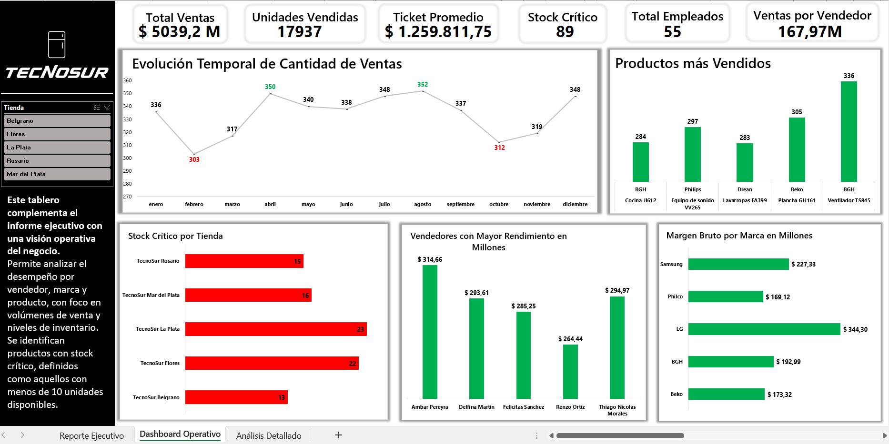
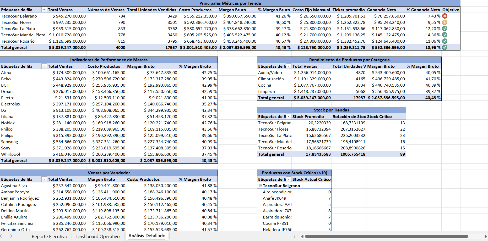

Resumen del Proyecto
El objetivo de este proyecto fue demostrar que es posible realizar análisis de alto nivel y construir dashboards interactivos e impactantes utilizando únicamente Excel. Para eso, generé con Python los datos simulados de una empresa ficticia del rubro electrodomésticos, utilizando librerías como pandas, numpy y faker, y los guardé como archivos CSV listos para su análisis. En Power Query realicé la transformación de los datos y construí una tabla calendario personalizada para habilitar análisis temporales más complejos. Luego, en Power Pivot, modelé las relaciones entre las tablas y diseñé medidas DAX para calcular métricas comerciales clave. El resultado final incluye reportes ejecutivos y operativos que permiten analizar el desempeño de la compañía desde múltiples ángulos. Todo el flujo de trabajo fue diseñado para simular un entorno de análisis profesional real, replicando procesos que podrían darse en una empresa del mundo actual.
Desarrollo del Proyecto
El desarrollo del proyecto comenzó con la definición de un modelo de negocio para una cadena ficticia de tiendas de electrodomésticos en Argentina. Para simular un escenario realista, establecí criterios comerciales y demográficos que incluyen la ubicación de las sucursales, la segmentación de turnos de trabajo, la variedad de productos, la rotación de inventario y la distribución de ventas.
Con este marco, generé datos sintéticos utilizando Python, apoyándome en librerías como pandas, numpy y faker. De esta manera, creé seis tablas principales: empleados, tiendas, productos, inventario, ventas y costos fijos por tienda, que luego exporté en formato CSV para su posterior tratamiento en Excel.
En Excel, utilicé Power Query para transformar y limpiar los datos, normalizando formatos, creando nuevas columnas calculadas y construyendo una tabla calendario personalizada en M para habilitar análisis temporales más complejos. En Power Pivot, modelé las relaciones entre las tablas y definí medidas con DAX para calcular indicadores clave como ingresos, ticket promedio, cantidad de ventas y márgenes.
El reporte final incluye tres hojas diferenciadas: un dashboard ejecutivo con enfoque estratégico, que permite una lectura rápida de las principales métricas comerciales; un dashboard operativo pensado para el seguimiento diario, con segmentadores por tienda; y una hoja de análisis detallado con tablas dinámicas que permiten explorar cada dimensión del negocio de manera flexible e interactiva.
Con este proyecto, demostré que es posible construir un análisis de calidad y visualmente atractivo utilizando únicamente las herramientas de Excel, ofreciendo una solución profesional y accesible para la toma de decisiones empresariales.